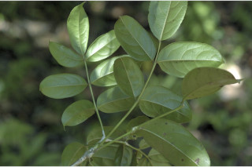
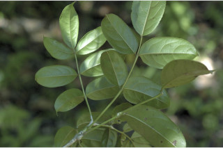
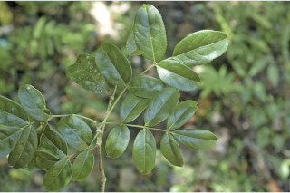
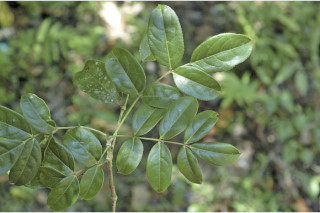
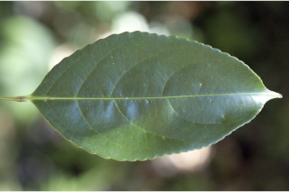
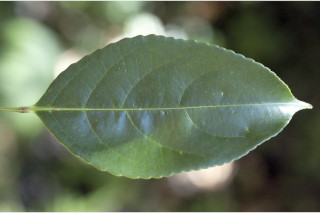
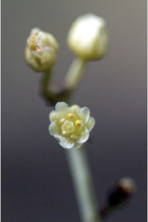
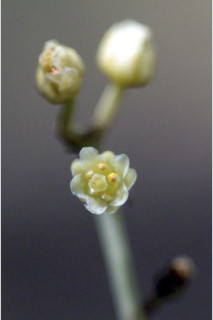

Trees up to 12 m tall.
12 ಮೀ ಎತ್ತರದವರೆಗಿನ ಮರಗಳು.
Trees up to 12 m tall.
மரங்கள் 12 மீ. உயரம் வரை வளரக்கூடியது.
Bark brownish, smooth, scaly when mature; blaze reddish-brown.
ತೊಗಟೆ ಕಂದು ಬಣ್ಣದ ಛಾಯೆಯಲ್ಲಿದ್ದು ನಯವಾಗಿರುತ್ತದೆ, ಬಲಿತಾಗ ಚಕ್ಕೆಯೇಳುವ ಮಾದರಿಯಲ್ಲಿರುತ್ತದೆ;ಕಚ್ಚು ಮಾಡಿದ ಜಾಗ ಕೆಂಪು ಮಿಶ್ರಿತ-ಕಂದು.
Bark brownish, smooth, scaly when mature; blaze reddish-brown.
மரத்தின் பட்டை ப்ரவுன் நிறமானது, வழுவழுப்பானது, முதிரும் போது செதில்களாக உதிருபவை; உள்பட்டை சிவப்பு-ப்ரவுன் நிறமானது.
Young branchlets angular to subterete, minutely puberulous.
ಎಳೆಯ ಕಿರುಕೊಂಬೆಗಳು ಕೋನಯುಕ್ತವಾಗಿರುವುದರಿಂದ ದುಂಡಾಗಿದ್ದು,ಸೂಕ್ಷ್ಮ ಮೃದು ತುಪ್ಪಳದಿಂದ ಕೂಡಿರುತ್ತವೆ.
Young branchlets angular to subterete, minutely puberulous.
சிறிய நுனிக்கிளைகள் குறுக்குவெட்டுத் தோற்றத்தில் கோணங்களுடையது முதல் கிட்டதட்ட வளையமானது, நுண்ணிய உரோமங்களுடையது.
Leaves compound, imparipinnate, 17-40 cm long, opposite, decussate; stipule interpetiolar, caducous and leaving scar; rachis pulvinate, terete, glabrous; petiolule 0.3 long for the lateral leaflets and 1.3 cm with swollen apex long in terminal one, canaliculate, glabrous; leaflets opposite, 3 to 9, 7-16 x 3.5- 8.5 cm, elliptic to broadly elliptic, apex acuminate, base acute to rounded, margin serrate, coriaceous, glabrous; midrib thinly raised above; secondary_nerves 5-7 pairs, gradually curved and ascending towards apex; tertiary_nerves reticulo-percurrent.
ಎಲೆಗಳು ಸಂಯುಕ್ತವಾಗಿದ್ದು ಅಸಮಗರಿ ರೂಪಿಗಳಾಗಿರುತ್ತವೆ,17 ರಿಂದ 40 ಸೆಂ.ಮೀ ಉದ್ದವಿದ್ದು,ಅಭಿಮುಖ,ಕತ್ತರಿಯಾಕಾರದ ಜೋಡನಾ ವ್ಯವಸ್ಥೆಯಲ್ಲಿರುತ್ತವೆ; ಕಾವಿನೆಲೆಗಳು ತೊಟ್ಟುಗಳ ನಡುವೆ ಇದ್ದು, ಉದುರಿ ಹೋಗುವ ಮಾದರಿಯವುಗಳಾಗಿದ್ದು ಉದುರಿದ ನಂತರ ಗುರುತುಗಳನ್ನು ಉಳಿಸುವಂತವು;ಅಕ್ಷದಿಂಡು ಉಬ್ಬಿದ ಬುಡದ ಸಮೇತವಿದ್ದು,ದುಂಡಾಗಿರುತ್ತವೆ, ರೋಮರಹಿತವಾಗಿರುತ್ತದೆ; ಪಾರ್ಶ್ವದಲ್ಲಿನ ಉಪಪತ್ರಗಳ ತೊಟ್ಟು 0.3 ಸೆಂ.ಮೀ. ಉದ್ದವಿದ್ದು,ತುದಿಯಲ್ಲಿನ ಉಪಪತ್ರಗಳ ತೊಟ್ಟು,ಉಬ್ಬಿದ ಅಗ್ರವನ್ನು ಹೊಂದಿದ್ದು 1.3 ಸೆಂ.ಮೀ. ಉದ್ದವಿರುತ್ತವೆ,ಕಾಲುವೆಗೆರೆ ಸಮೇತವಿರುತ್ತವೆ, ರೋಮರಹಿತವಾಗಿರುತ್ತದೆ; ಉಪಪತ್ರಗಳುಅಭಿಮುಖಿಗಳಾಗಿದ್ದು, 3 ರಿಂದ 9 ಇದ್ದು, 7-16 X 3.5 – 8.5 ಸೆಂ.ಮೀ. ಗಾತ್ರ ಹೊಂದಿದ್ದು,ಅಂಡವೃತ್ತದಿಂದ ವಿಶಾಲ ಚತುರಸ್ರದ ರೀತಿಯವರೆಗಿನ ಆಕಾರ, ಕ್ರಮೇಣ ಚೂಪಾಗುವ ತುದಿ, ಚೂಪಾದುದರಿಂದ ದುಂಡಾದ ರೀತಿಯ ಬುಡ,ಗರಗಸ ದಂತಿತ ಅಂಚು,ತೊಗಲನ್ನು ಹೋಲುವ ಮೇಲ್ಮೈ ಹೊಂದಿದ್ದು ರೋಮರಹಿತವಾಗಿರುತ್ತವೆ; ಮಧ್ಯನಾಳ ಮೇಲ್ಭಾಗದಲ್ಲಿ ತೆಳುವಾಗಿ ಮೇಲೆದ್ದಿರುತ್ತದೆ; ಎರಡನೇ ದರ್ಜೆಯ ನಾಳಗಳು 5 - 7 ಜೋಡಿಗಳಿದ್ದು,ತುದಿಯ ಕಡೆಗೆ ಕ್ರಮೇಣವಾಗಿ ಬಾಗಿರುತ್ತವೆ ಮತ್ತು ಆರೋಹಣ ಮಾದರಿಯಲ್ಲಿರುತ್ತವೆ;ಮೂರನೇ ದರ್ಜೆಯ ನಾಳಗಳು ಜಾಲಬಂಧ ನಾಳ ವಿನ್ಯಾಸದಲ್ಲಿದ್ದು ಎಲೆ ದಿಂಡಿಗೆ ಅಡ್ಡವಾಗಿ ಕೂಡುತ್ತವೆ.
Leaves compound, imparipinnate, 17-40 cm long, opposite, decussate; stipule interpetiolar, caducous and leaving scar; rachis pulvinate, terete, glabrous; petiolule 0.3 long for the lateral leaflets and 1.3 cm with swollen apex long in terminal one, canaliculate, glabrous; leaflets opposite, 3 to 9, 7-16 x 3.5- 8.5 cm, elliptic to broadly elliptic, apex acuminate, base acute to rounded, margin serrate, coriaceous, glabrous; midrib thinly raised above; secondary_nerves 5-7 pairs, gradually curved and ascending towards apex; tertiary_nerves reticulo-percurrent.
இலைகள் கூட்டிலை, ஒற்றைபடை சிறகு வடிவக்கூட்டிலைகள், 17-40 செ.மீ. நீளமானது, எதிரடுக்கமானவை, குறுக்குமறுக்கமானவை; இலையடிச்செதில் இருஇலைக்காம்பிற்கு நடுவே (இண்டர்பீட்டியோலார்) உடையது, எளிதில் உதிரக்கூடியது மற்றும் தழும்புகளை ஏற்படுத்துகின்றன; மத்தியகாம்பு (ராக்கிஸ்) பல்வினேட், குறுக்குவெட்டுத் தோற்றத்தில் வளையமானது, உரோமங்களற்றது; பக்கவாட்டில் அமைந்த சிற்றிலையின் காம்பு 0.3 செ.மீ. நீளமானது, நுனியிலுள்ள சிற்றிலையின் காம்பு 1.3 செ.மீ. நீளமானது மற்றும் அதன் முனை உப்பியது, குறுக்குவெட்டுத் தோற்றத்தில் கேனாலிகுலேட், உரோமங்களற்றது; சிற்றிலைகள் எதிரடுக்கமானவை, 3 முதல் 9, 7-16 X 3.5-8.5 செ.மீ., நீள்வட்ட வடிவானது முதல் அகன்ற நீள்வட்ட வடிவானது, அலகின் நுனி அதிக்கூரியது, அலகின் தளம் கூரியது முதல் வட்டமானது, அலகின் விளிம்பு ரம்ப பற்களுடையது, கோரியேசியஸ், உரோமங்களற்றது; மையநரம்பு மேற்புறத்தில் அலகின் பரப்பைவிட சிறிது உயர்ந்து இருக்கும்; இரண்டாம் நிலை நரம்புகள் 5-7 ஜோடிகள், சீராக வளைந்தவை மற்றும் நுனி நோக்கி வளைந்தவை; மூன்றாம் நிலை நரம்புகள் வலைப்பின்னல்-பெர்க்கரண்ட் போன்றவை.
Inflorescence terminal or axillary panicle; flowers yellowish; pedicel ca. 0.2 cm long.
ಪುಷ್ಪಮಂಜರಿಗಳು ತುದಿಯಲ್ಲಿನ ಅಥವಾ ಅಕ್ಷಾಕಂಕುಳಿನಲ್ಲಿನ ಪುನಾರಾವೃತ್ತಿಯಾಗಿ ಕವಲೊಡೆಯುವ ಮಾದರಿಯವು ;ಹೂಗಳು ಹಳದಿ ಬಣ್ಣದ ಛಾಯೆ ಹೊಂದಿರುತ್ತವೆ; ತೊಟ್ಟುಗಳು ಅಂದಾಜು 0.2 ಸೆಂ.ಮೀ. ಉದ್ದವಿರುತ್ತವೆ.
Inflorescence terminal or axillary panicle; flowers yellowish; pedicel ca. 0.2 cm long.
மஞ்சரி தண்டின் நுனியில் அல்லது இலைக்கோணங்களில் காணப்படுபவை, பேனிக்கிள் வகை மஞ்சரி; மலர்கள் மஞ்சள் நிறமானது; மலர்காம்பு 0.2 செ.மீ. நீளமானது.
Berry, woody, subglobose to 2.5 cm across, slightly rugose, whitish-brown; seeds 3.
ಬೆರ್ರಿಗಳು,ದಾರುವಿನಂತಿದ್ದು,ಉಪಗೋಳಾಕಾರ ಹೊಂದಿದ್ದು, 2.5 ಸೆಂ.ಮೀ.ವರೆಗಿನ ಉದ್ದವಿರುತ್ತವೆ ಹಾಗೂ ಸುಕ್ಕು ಸುಕ್ಕಾದ ಮೇಲ್ಮೈ ಹೊಂದಿದ್ದು ಬಿಳಿ ಮಿಶ್ರಿತ ಕಂದು ಬಣ್ಣ ಹೊಂದಿರುತ್ತದೆ;ಬೀಜಗಳ ಸಂಖ್ಯೆ 3.
Berry, woody, subglobose to 2.5 cm across, slightly rugose, whitish-brown; seeds 3.
முழுச்சதைகனி (பெர்ரி), தடித்தவை, கிட்டதட்ட கோள வடிவமானது, 2.5 செ.மீ. குறுக்களவுடையது, சிறிது சுருக்கங்களுடையவை (ருக்கோஸ்), வெள்ளை-ப்ரவுன் நிறமானது; விதைகள் 3.


 

 


 



 
